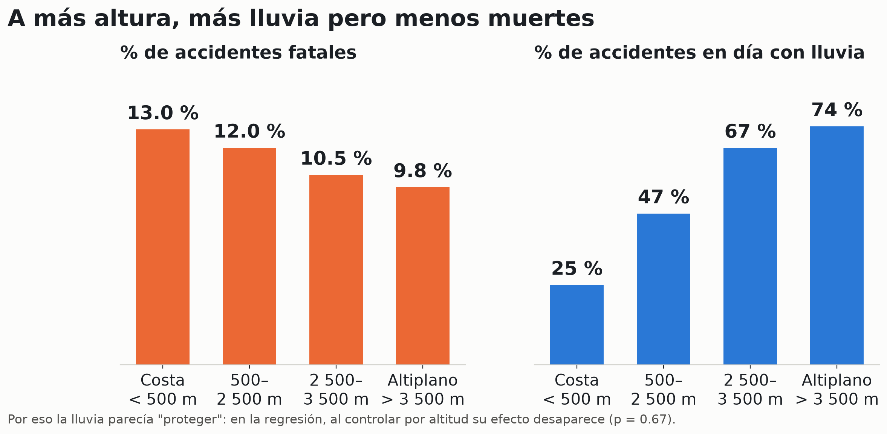
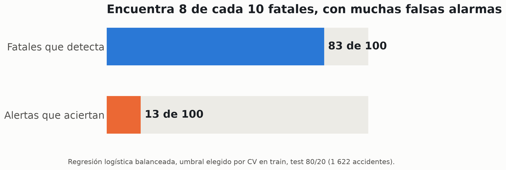
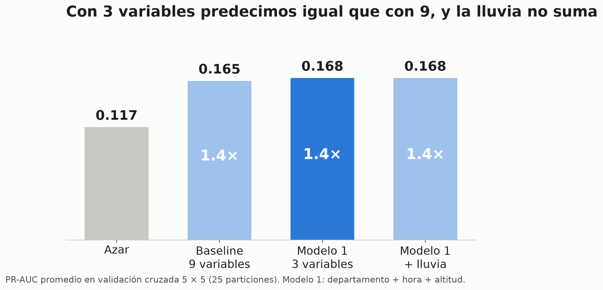
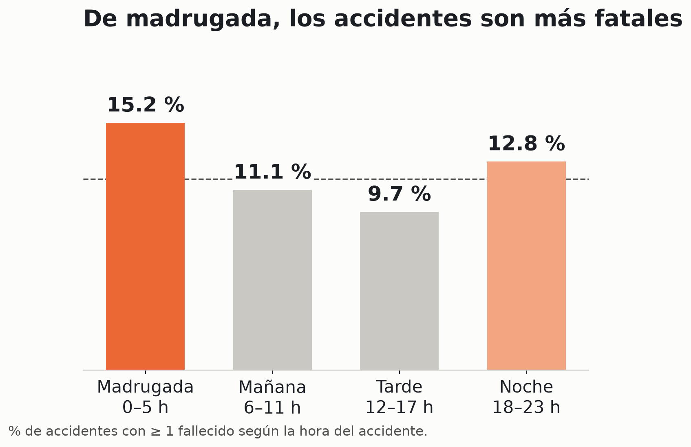
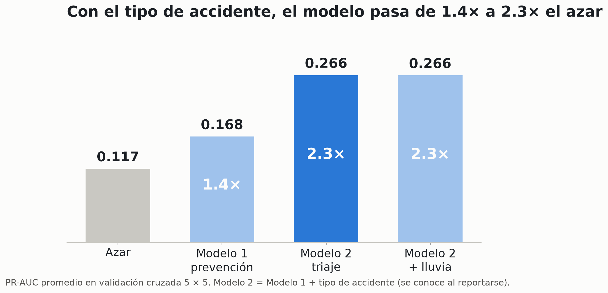
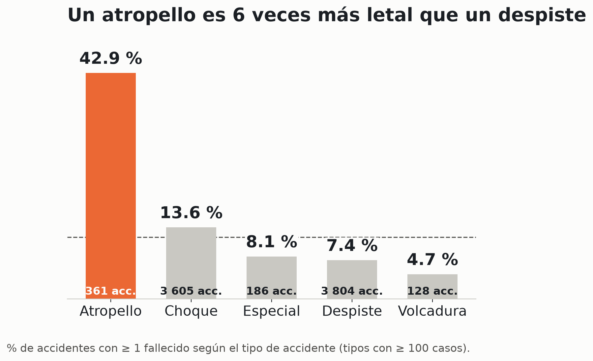

Inteligencia Artificial Aplicada · Grupo 3
¿La lluvia vuelve más mortales los accidentes en las carreteras del Perú?
Costa árida, sierra y selva: el país tiene regímenes de lluvia muy distintos y la lluvia reduce la fricción y la visibilidad. Pero, ¿cambia la mortalidad?
8 110accidentes en vías nacionales
SUTRAN · ene 2020 – sep 2021
11.7 %terminaron con al menos
un fallecido
80 %ubicados en el mapa
por vía y kilómetro
Marco Rodriguez · Angel Cerdán · Raul Malaver · Fernando De La Cruz · PUCP 2026-2
1 · Problema y datos
Medimos la lluvia donde ocurrió cada accidente y predecimos si fue fatal
Accidentes SUTRANfecha, hora, departamento, vía y km
Red Vial Nacional (MTC)vía + km → coordenadas
Open-Meteolluvia diaria y altitud (celda ~11 km)
↓
8 110 accidentes × lluvia en el punto
Qué predecimos: dado un accidente, ¿es fatal? (≥ 1 fallecido).
Por qué ubicarlo: la lluvia de la capital del departamento se equivoca sobre si llovió en 1 de cada 5 accidentes.
Datos abiertos SUTRAN (ODC-By) · Red Vial Nacional MTC · Open-Meteo (reanálisis)1/7
2 · Lo que encontramos en los datos
Con lluvia, los accidentes no son más fatales: la diferencia la explica la altitud

En la sierra llueve más y los accidentes son menos fatales; en la costa, al revés. Por eso la lluvia parecía "proteger". Al controlar por altitud y departamento, su efecto desaparece: odds ratio 0.98, p = 0.67.
Regresión logística clásica: fatal ~ lluvia + altitud + hora + departamento2/7
3 · Baseline
El baseline detecta fatales mejor que el azar, pero con muchas falsas alarmas
0.165PR-AUC (validación cruzada 5 × 5)
1.4 veces el azar (azar = 0.117)
- Modelo: regresión logística con pesos de clase, 9 variables conocidas antes del accidente (lluvia, altitud, hora, mes, día, departamento, vía). Interpretable y punto de partida de la literatura.
- Métrica: PR-AUC y no exactitud: un modelo que siempre dice "no fatal" acierta el 88 %.

De 100 accidentes fatales encuentra ~83, pero solo ~13 de cada 100 alertas son realmente fatales. ¿Por qué no lo hace mejor?
Partición estratificada 80/20 y validación cruzada repetida 5 × 5 (mismas 25 particiones para todos los modelos)3/7
4 · Por qué el desempeño es bajo
Antes del accidente no existe una situación de alto riesgo: lo que define la muerte es cómo ocurre el choque
29 %es lo más letal que se puede anticipar: incluso en el peor lugar, hora y altitud, 7 de cada 10 accidentes no son fatales
Los modelos complejos (Random Forest, boosting, MLP) no superan a la logística. El tipo de choque (atropello, volcadura…) sube el techo a 57 %, pero se conoce recién cuando el accidente se reporta: ahí entra el Modelo 2.
Grupos con ≥ 30 accidentes; % fatal observado en cada grupo4/7
5 · Modelo 1 · prevención (antes del accidente)
Con 3 variables predecimos igual que con 9, y agregar la lluvia no suma nada
DepartamentoHoraAltitud
lluviamesdíavía

- Mismo desempeño, menos variables: +0.003 de PR-AUC frente al baseline (mejor en 15 de 25 particiones) y mejor F1 y precisión en test.
- Lluvia: agregarla al Modelo 1 cambia la PR-AUC en +0.000.

Lo que sí pesa: la madrugada es la franja más letal, la costa es más letal que la sierra (OR 0.77 por cada 1 700 m de altitud) y Huancavelica, Puno y La Libertad tienen el mayor riesgo.
Regresión logística: departamento + hora (seno/coseno) + altitud (m) · PR-AUC en validación cruzada 5 × 55/7
6 · Modelo 2 · triaje (al reportarse el accidente)
Cuando se reporta el accidente, su tipo permite priorizar: 3 de cada 10 alertas son fatales, el doble que antes
DepartamentoHoraAltitudTipo de accidente
lluvia

- Uso: decidir a qué accidente mandar primero la ambulancia. Gana al Modelo 1 en las 25 de 25 particiones.
- Lluvia: tampoco suma aquí (−0.000).

Límite: encuentra bien los casos de mayor riesgo (atropellos), pero si se quiere detectar 8 de cada 10 fatales, la precisión baja a ~15 %. Supuesto: la central conoce el tipo al recibir el reporte.
Regresión logística: Modelo 1 + tipo de accidente · PR-AUC en validación cruzada 5 × 5 · umbral por F1 en train6/7
7 · Respuesta
La lluvia no vuelve más mortales los accidentes en las carreteras del Perú. Para prevenir, lugar, hora y altitud solo dan 1.4× el azar; al reportarse, el tipo de accidente lo sube a 2.3× y permite priorizar la atención.
Qué aprendimos
Modelos simples bastan: 3 variables igualan a 9 y la logística empata con Random Forest. El límite lo ponen las variables disponibles, no la complejidad del modelo.
Limitaciones
Asociaciones, no causas. Lluvia de reanálisis (~11 km), 20 % de accidentes sin ubicar, solo accidentes ocurridos (sin tráfico) y periodo de pandemia.
Siguientes pasos
Ajustar el umbral del Modelo 2 al uso real (cuántas ambulancias hay) y sumar datos del vehículo, ocupantes y tráfico para detectar más fatales.
Repositorio: notebooks/02_modelos.ipynb · results/metrics.csv · results/model_comparison.txt7/7